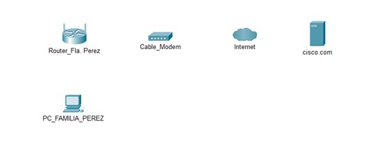
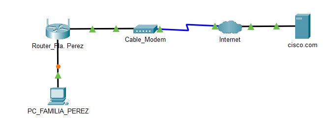
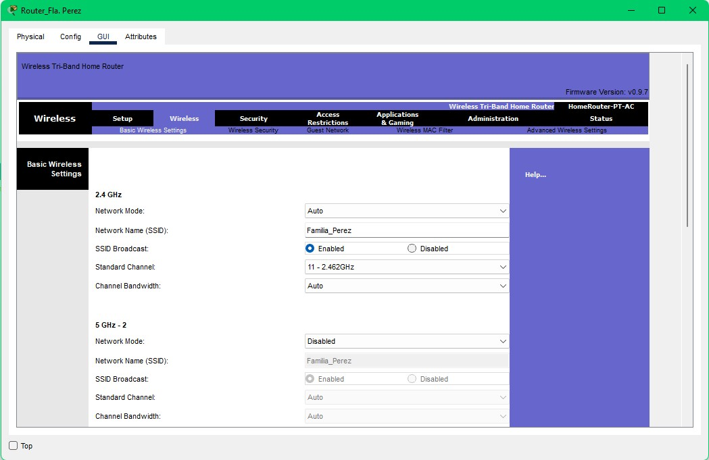
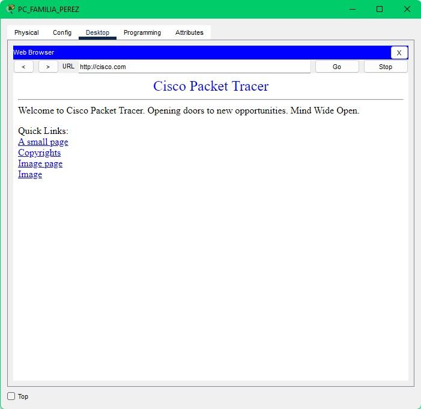
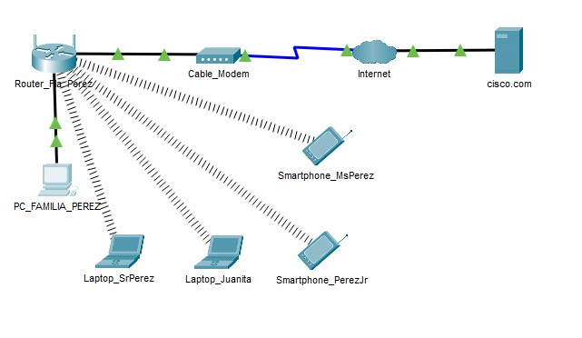
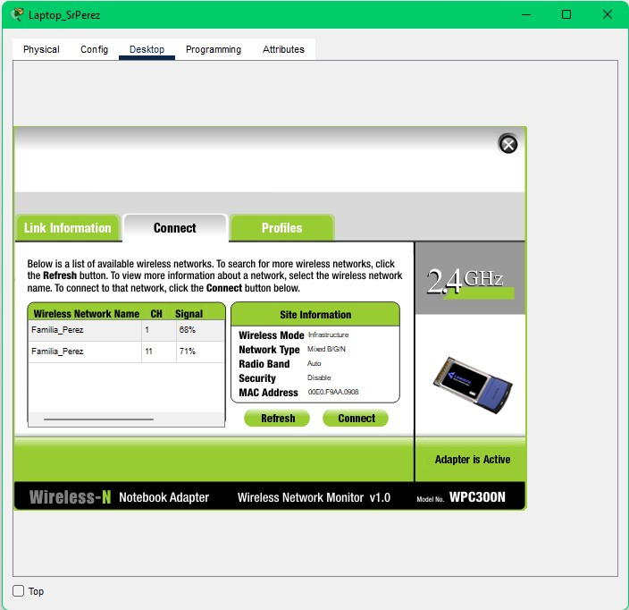

Laboratorio #1 Redes
Desarrollo y solucion propuesta para el laboratorio #1 de la materia Redes, del grupo #6 conformado
por:
- Farouk Abdala
- Julian Pulido
- Gabriel Jimenez
Tambien se acompañara esta Wiki con las imagenes mas representativas del desarrollo del laboratorio, y una
conclusion.

PROBLEMATICA
En este laboratorio se buscará hacer uso de las herramientas y conocimientos adquiridos en
los cursos ofrecidos por
Cisco para solucionar problemáticas cotidianas relacionadas con la temática tratada en Redes y Comunicación de
datos.
Para este caso, se tiene a una familia, la familia Pérez que desea instalar un servicio de internet que brinde
acceso al
servicio a los diferentes dispositivos en el hogar. Para este laboratorio se hará la prueba de conexión a internet
con
la página Cisco.com, para así comprobar si los dispositivos tienen acceso a internet.
DESARROLLO
Para empezar, se colocó los principales elementos necesarios para poder lograr un
funcionamiento por vía inalámbrica del
servicio de internet en el hogar de la Familia Pérez. Estos son:
- Un PC de torre que funcione como ordenador principal del hogar (Se encuentra en End Devices > End Devices > PC)
- Un Router que brinde señal inalámbrica de internet en el hogar. (Se encuentra en Network Devices > Wireless
Devices >Home Router)
- Un Cable Modem para modular las señales de datos que halla en el hogar y demodular las que se reciban para un
correcto Funcionamiento del servicio. (Se encuentra en Network Devices > WAN Emulation > Cable Modem)
- La nube de internet que funcionara como servicio de almacenamiento y procesamiento de datos. (Se encuentra en
Network Devices > WAN Emulation > PT-Cloud)
- Y un servidor que funcionara como medio de almacenamiento y de respuesta a los datos enviados por la nube. (Se
encuentra en End Devices > End Devices > Server)
Lo primero que se hizo con estos elementos fue renombrarlas para organizar de mejor manera el laboratorio.
CONEXION
A continuación, se conectaron los elementos mencionados de la siguiente manera:
- PC (FastEthernet0) > Cable directo de cobre > Router Wireless (Gigabit Ethernet 1)
- Router Wireless (Internet) > Cable directo de cobre > Cable Modem (Port 1)
- Cable Modem (Port 0) > Cable de cobre Coaxial > Nube de Internet (Coaxial7)
- Nube de Internet (Ethernet6) > Cable directo de cobre > Servidor de “Cisco.com” (FastEthernet0)

CONFIGURACION
Después, se procedió a iniciar con la configuración de los dispositivos.
El primero fue el servidor. Para este se realizaron las siguientes modificaciones de configuración con base a lo
aprendido u obtenido en el curso “Comenzando con Packet Tracer” ofrecido por la empresa Cisco en su página web.
Las
configuraciones realizadas fueron las siguientes:
- Se asignó una IP estática al servidor la cual fue: 209.165.200.224
- Se asigno un dominio al servidor activando el DNS del mismo para así permitir el acceso externo. Los dominios
asignados
fueron: Cisco.com y www.Cisco.com, ambos con una dirección 209.165.200.225.
- Se activo de igual la manera el servicio de DHCP para que los otros equipos al conectarse a la red obtengan una
direccion IP por medio de este protocolo.
- Se les asignaron valores de Default Gateway y de Subnet Mask a la configuración del servidor siendo
209.165.200.225 y
255.255.255.224 respectivamente.
CONFIGURACION
A los dispositivos de la nube de internet, Cable_Modem no se les realizaron mayor
configuración, que sus
correspondientes conexiones.
Al Router_Fa. Pérez, en la pestaña de GUI se realizó la configuración de la red, cambiando su nombre default por
“Familia_Perez”.

CONFIGURACION
El último en configurar de estos equipos fue el Pc_Familia_Perez al cual se le encendió la
opción de realizar DHCP para poder obtener una direccion IP al momento de conectarse a la red. Luego de esto por
medio de la opción de Web Browser en Desktop se accedió al sitio de www.Cisco.com, lo cual fue exitoso.

CONEXION
A continuación, se conectaron los dispositivos inalámbricos de la casa, los cuales son:
- Laptop del Sr Pérez
- Laptop de Juanita
- Smartphone de Pérez Jr.
- Smartphone de Sra. Pérez

CONEXION
A estos dispositivos también se les realizaron sus configuraciones propias.
- La laptop del Sr Pérez se apagó, luego se le realizo el cambio de su tarjeta LAN y se intercambió por una
tarjeta
WPC300N, luego de volver a encender el portátil, se activó la conexión de pc Wireless, se buscó la red
“Familia_Perez” y
se conectó. Luego por medio de la opción de Web Browser en Desktop se accedió al sitio de www.Cisco.com, lo cual
fue
exitoso.
- La laptop de Juanita se apagó, luego se le realizo el cambio de su tarjeta LAN y se intercambió por una tarjeta
WPC300N, luego de volver a encender el portátil, se activó la conexión de pc Wireless, se buscó la red
“Familia_Perez” y
se conectó. Luego por medio de la opción de Web Browser en Desktop se accedió al sitio de www.Cisco.com, lo cual
fue
exitoso.
CONEXION
- Al Smartphone de Pérez Jr. Se le activo la opción de Wireless0, y se cambió su SSDI por “Familia_Perez” el cual
es el
nombre la red a la cual se debe conectar. Luego por medio de la opción de Web Browser en Desktop se accedió al
sitio de
www.Cisco.com, lo cual fue exitoso.
- Al Smartphone de la Sra. Pérez. Se le activo la opción de Wireless0, y se cambió su SSDI por “Familia_Perez” el
cual
es el nombre la red a la cual se debe conectar. Luego por medio de la opción de Web Browser en Desktop se accedió
al
sitio de www.Cisco.com, lo cual fue exitoso.
CONCLUSION
Para concluir podemos afirmar, que es extremadamente importante tener conocimiento de los
procesos que se necesitan al momento de conectar cualquier End device a una red. Para esto tomamos en cuenta el
protocolo DHCP, el cual se tuvo que habilitar en el Servidor, para que cuando un End device se conectara, pudiera
obtener una IP generada por el servidor.